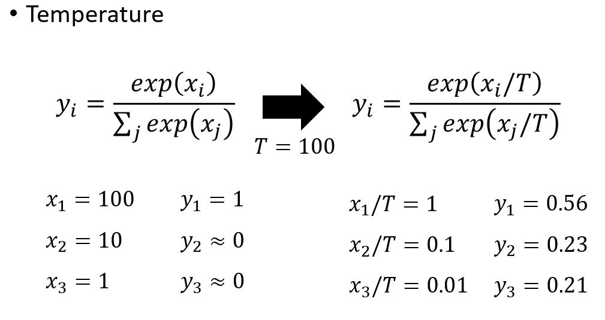
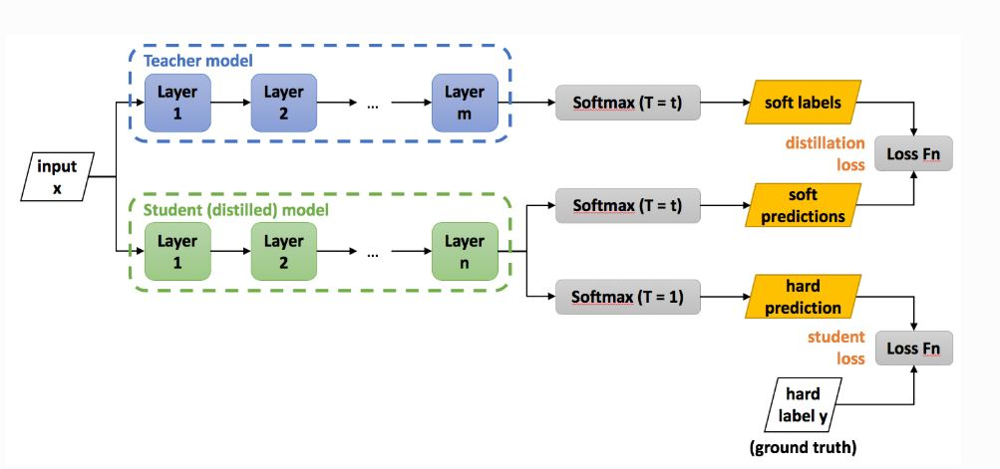

rf : 引自Geoffery Hinton (Dark knowledge)
神经网络学习与使用的矛盾
- 从训练数据集中提取大量的知识最简单的方式是，并行训练多个不同的模型
- 同时希望训练得到的模型尽可能的不同，来最小化其误差之间的相关性
- 可以使用不同的初始化方式、不同的网络结构、或不同的训练子集
- 这种情况下，将单个模型过拟合训练，是有益的
- 测试时，将所有模型的预测输出取平均，或选择输出误差相关性最小的一个子集
集成模型在测试时的劣势
- 大的集成模型参数是高度冗余的，每个参数所含的知识量很少
- 在测试阶段期望计算量集内存占用最少
The main idea
- 这个大的集成模型的功能，可以看作是输入向量与输出向量之间的映射（一个函数）
- 主要的想法就是，能否将这个集成模型所实现的函数功能迁移到一个更小的模型中去
软标签-Soft targets:
Net-T：教师模型
Net-S：学生模型
在知识蒸馏时，有一个泛化能力较强的Net-T,让Net-T来蒸馏训练Net-S。此时能高效的迁移泛化能力的方法就是使用Net-T的softmax层输出的类别概率作为”soft target“
- 传统训练过程(hard targets): 对ground truth求极大似然
- KD的训练过程(soft targets): 用large model的class probabilities作为soft targets

软标签的形式如上图所示，就是在原始的softmax函数中增加了一温度变量T。
为什么？ 原始softmax函数输出的概率分布熵较小(大的概率值很大，小的概率值很小)，负标签的值都很接近0，对函数的贡献非常小，小到可以忽略不记。
当加入温度变量T之后，T越高softmax的概率输出分布越趋于平滑，概率分布熵也越大。负标签携带的信息也会被相应的放大，模型训练会更加关注负标签所拥有的Knowledge 。这种训练方式使得每个样本给Net-S带来的信息量远大于传统的训练方式。
知识蒸馏的具体过程

第一步是训练Net-T，第二步在高温T下，蒸馏Net-T的知识到Net-S。高温蒸馏的目标函数由两部分组成
$L = \alpha L_s + \beta L_h$
$v_i$: Net-T的logits
$z_i$ : Net-S的logts
$p_i^T$: Net-T 在温度=T下的softmax输出在第i类上的值
$q_i^T$: Net-S 在温度=T下的softmax输出在第i类上的值
$c_i$: 在第i类上的ground truth值， $c_i $ $\in \lbrace 0, 1\rbrace$ , 正标签取1， 负标签取0
$N$ : 总标签数量
Net-T与Net-S同时输入transfer set,用Net-T产生的softmax distribution来作为soft target，Net-S 在相同温度T下的softmax输出与soft target 的cross entropy就是Loss函数的第一部分 $L_s$